수산물품질관리사-1차 (2021-07-10 기출문제)
1과목: 수산물품질관리 관련법령
1. 농수산물 품질관리법령상 농수산물품질관리심의회 위원을 지명한 자가 그 지명을 철회할 수 있는 경우가 아닌 것은?
- 해당 위원이 심신장애로 인하여 직무를 수행할 수 없게 된 경우
- 해당 위원이 직무와 관련된 비위사실이 있는 경우
- 해당 위원이 직무태만으로 인하여 위원으로 적합하지 아니하다고 인정되는 경우
- 위원이 해당 안건에 대하여 자문을 하여 스스로 해당 안건의 심의ㆍ의결에서 회피한 경우
(정답률: 40%)

2. 농수산물 품질관리법령상 수산물에 대하여 표준규격품임을 표시하려는 경우 해당 물품의 포장 겉면에 “표준규격품”이라는 문구와 함께 표시하여야 하는 사항을 모두 고른 것은?
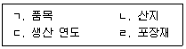
- ㄱ, ㄴ
- ㄱ, ㄷ
- ㄴ, ㄹ
- ㄷ, ㄹ
(정답률: 37%)
3. 농수산물 품질관리법령상 수산물 품질인증 표시의 제도법에 관한 내용으로 옳지 않은 것은?
- 표지도형의 한글 및 영문 글자는 고딕체로 한다.
- 표지도형의 색상은 파란색을 기본색상으로 하고, 포장재의 색깔 등을 고려하여 녹색 또는 빨간색으로 할 수 있다.
- 표지도형 내부의 “품질인증”의 글자 색상은 표지도형 색상과 동일하게 한다.
- 표지도형의 위치는 포장재 주 표시면의 옆면에 표시하되, 포장재 구조상 옆면에 표시하기 어려울 경우에는 표시위치를 변경할 수 있다.
(정답률: 30%)
4. 농수산물 품질관리법령상 농수산물 또는 농수산가공품에 대한 지리적표시 등록거절사유의 세부기준에 해당하지 않는 경우는?
- 해당 품목이 농수산물인 경우에는 지리적표시 대상지역에서만 생산된 것이 아닌 경우
- 해당 품목의 우수성이 국내 및 국외에서 모두 널리 알려지지 아니한 경우
- 해당 품목이 농수산가공품인 경우에는 지리적표시 대상지역에서만 생산된 농수산물을 주원료로 하여 해당 지리적표시 대상지역에서 가공된 것이 아닌 경우
- 해당 품목의 명성ㆍ품질 또는 그 밖의 특성이 본질적으로 특정지역의 생산환경적 요인에 기인하나 인적 요인에 기인하지 아니한 경우
(정답률: 25%)
5. 농수산물 품질관리법상 안전성검사기관에 관한 설명으로 옳은 것은?
- 안전성검사기관은 해양수산부장관이 지정한다.
- 거짓으로 지정을 받은 경우 지정취소 또는 6개월 이내의 업무정지 처분을 받을 수 있다.
- 안전성검사기관 지정의 유효기간은 1년을 초과하지 아니하는 범위에서 한 차례만 연장될 수 있다.
- 안전성검사기관 지정이 취소된 경우 취소된 후 3년이 지나지 아니하면 그 지정을 신청할 수 없다.
(정답률: 20%)
6. 농수산물 품질관리법령상 양식시설이 아닌 수산물의 생산ㆍ가공시설을 등록신청하는 경우 등록신청서에 첨부하여야 하는 서류가 아닌 것은?
- 생산ㆍ가공시설의 위생관리기준 이행계획서
- 생산ㆍ가공시설의 용수배관 배치도
- 생산ㆍ가공시설의 구조 및 설비에 관한 도면
- 생산ㆍ가공시설에서 생산ㆍ가공되는 제품의 제조공정도
(정답률: 20%)
7. 농수산물 품질관리법령상 해양수산부장관이 지정해역에서 수산물의 생산을 제한할 수 있는 경우로 명시되지 않은 것은?
- 선박의 좌초로 인하여 해양오염이 발생한 경우
- 인근에 위치한 폐기물처리시설의 장애로 인하여 해양오염이 발생한 경우
- 지정해역이 일시적으로 위생관리기준에 적합하지 아니하게 된 경우
- 지정해역에서 수산물의 생산량이 급격하게 감소한 경우
(정답률: 34%)
8. 농수산물 품질관리법령상 지정해역에서 위생관리기준에 맞게 생산된 수산물 및 수산가공품에 대한 관능검사 및 정밀검사를 생략할 수 있는 경우 수산물ㆍ수산가공품 (재)검사신청서에 첨부하는 생산ㆍ가공일지에 적어야 하는 사항이 아닌 것은?
- 어획기간
- 생산(가공)기간
- 포장재
- 품질관리자
(정답률: 29%)
9. 농수산물 품질관리법령상 수산물 및 수산가공품의 검사에 관한 설명으로 옳지 않은 것은?
- 수산물 및 수산가공품의 검사를 위한 필요한 최소량의 시료의 수거량 및 수거방법은 국립수산물품질관리원장이 정하여 고시한다.
- 정부에서 수매ㆍ비축하는 수산물 및 수산가공품은 품질 및 규격이 맞는지와 유해물질이 섞여 들어오는지 등에 관하여 해양수산부장관의 검사를 받아야 한다.
- 외국과의 협약이나 수출 상대국의 요청에 따라 검사가 필요한 경우로서 해양수산부장관이 정하여 고시하는 수산물 및 수산가공품은 관세청장의 검사를 받아야 한다.
- 검사를 받은 수산물의 포장ㆍ용기를 바꾸려면 다시 해양수산부장관의 검사를 받아야 한다.
(정답률: 32%)
10. 농수산물 품질관리법령상 수산물품질관리사가 수행하는 직무로 명시되지 않은 것은?
- 포장수산물의 표시사항 준수에 관한 지도
- 수산물의 생산 및 수확 후의 품질관리기술 지도
- 수산물의 선별ㆍ저장 및 포장 시설 등의 운용ㆍ관리
- 위판장에 상장한 수산물에 대한 정가ㆍ수의매매 등의 가격 협의
(정답률: 37%)
11. 농수산물 유통 및 가격안정에 관한 법률 제2조(정의)의 일부 규정이다. ( )에 들어갈 내용은?
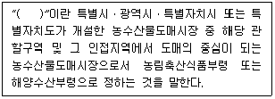
- 중앙도매시장
- 지방도매시장
- 농수산물공판장
- 민영농수산물도매시장
(정답률: 34%)
12. 농수산물 유통 및 가격안정에 관한 법령상 “생산자 관련 단체”에 해당하는 것은?
- 도매시장법인
- 어업회사법인
- 매매참가인
- 산지유통인
(정답률: 30%)
13. 농수산물 유통 및 가격안정에 관한 법령상 '농수산물도매시장ㆍ공판장 및 민영도매시장의 시설기준'에서 필수시설이 아닌 것은?
- 주차장
- 경비실
- 경매장(유개[有蓋])
- 쓰레기 처리장
(정답률: 23%)
14. 농수산물 유통 및 가격안정에 관한 법률상 시장관리운영위원회의 심의사항으로 명시되어 있는 것을 모두 고른 것은?
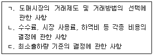
- ㄱ, ㄴ
- ㄱ, ㄷ
- ㄴ, ㄷ
- ㄱ, ㄴ, ㄷ
(정답률: 30%)
15. 농수산물 유통 및 가격안정에 관한 법령상 과징금에 관한 설명으로 옳지 않은 것은?
- 업무정지 1개월은 30일로 한다.
- 업무정지를 갈음한 과징금 부과의 기준이 되는 거래금액은 처분 대상자의 전년도 연간 거래액을 기준으로 한다.
- 도매시장의 개설자는 1일당 과징금 금액을 30퍼센트의 범위에서 가감하는 사항을 업무 규정으로 정하여 시행할 수 있다.
- 도매시장법인에 대해 부과하는 과징금은 5천만원을 초과할 수 없다.
(정답률: 29%)
16. 농수산물의 원산지 표시에 관한 법령상 수산물가공업자 甲은 국내에서 S어육햄을 제조하여 판매하고자 한다. 이 경우 포장지에 표시하여야 할 원산지 표시는?
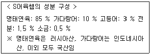
- 어육햄(명태연육: 러시아산)
- 어육햄(명태연육: 러시아산, 가다랑어: 인도네시아산)
- 어육햄(명태연육: 러시아산, 가다랑어: 인도네시아산, 고등어: 국산)
- 어육햄(명태연육: 러시아산, 가다랑어: 인도네시아산, 고등어: 국산, 전분: 국산)
(정답률: 25%)
17. 농수산물의 원산지 표시에 관한 법령상 수산물도매업자 甲은 원산지표시를 하지 않고 중국산 뱀장어를 판매할 목적으로 저장고에 보관하던 중 단속 공무원 乙에게 적발되었다. 이 경우 처분권자가 甲에게 행할 수 없는 것은?
- 표시의 이행명령
- 해당 뱀장어의 거래행위 금지
- 과징금 부과
- 과태료 부과
(정답률: 11%)
18. 농수산물의 원산지 표시에 관한 법령상 해양수산부장관이 “원산지통합관리시스템”의 구축ㆍ운영 권한을 위임하는 자는?
- 국립수산물품질관리원장
- 시ㆍ도지사
- 시장ㆍ군수ㆍ구청장
- 관세청장
(정답률: 28%)
19. 농수산물의 원산지 표시에 관한 법령상 농수산물 원산지 표시제도 교육을 이수하지 않은 자에 대한 과태료 부과금액은? (단, 위반차수는 1차이며 감경사유는 고려하지 않음)
- 15만원
- 20만원
- 30만원
- 60만원
(정답률: 30%)
20. 친환경농어업 육성 및 유기식품 등의 관리ㆍ지원에 관한 법령상 유기식품의 인증 및 관리에 관한 설명으로 옳은 것은?
- 인증기관은 인증 신청을 받았을 때에는 10일 이내에 인증심사계획을 세워 신청인에게 인증심사일정과 인증심사명단을 알리고 그 계획에 따라 인증심사를 해야 한다.
- 인증의 유효기간은 인증을 받은 날부터 2년으로 한다.
- 인증대상은 유기가공식품을 제조ㆍ가공하는 자에 한정한다.
- 인증심사 결과에 대하여 이의가 있는 자는 인증심사를 한 해양수산부장관 또는 인증기관에 재심사를 신청할 수 없다.
(정답률: 20%)
21. 친환경농어업 육성 및 유기식품 등의 관리ㆍ지원에 관한 법률상 공시기관의 지정을 취소하여야 하는 경우는?
- 고의 또는 중대한 과실로 공시기준에 맞지 아니한 제품에 공시를 한 경우
- 업무정지 명령을 위반하여 정지기간 중에 공시업무를 한 경우
- 정당한 사유 없이 1년 이상 계속하여 공시업무를 하지 아니한 경우
- 공시기관의 지정기준에 맞지 아니하게 된 경우
(정답률: 29%)
22. 친환경농어업 육성 및 유기식품 등의 관리ㆍ지원에 관한 법률상 벌칙기준이 3년 이하의 징역 또는 3천만원 이하의 벌금에 해당하지 않는 자는?
- 인증기관의 지정을 받지 아니하고 인증업무를 한 자
- 인증, 인증 갱신 또는 공시, 공시 갱신의 신청에 필요한 서류를 거짓으로 발급한 자
- 인증품에 인증을 받지 아니한 제품 등을 섞어서 판매할 목적으로 보관, 운반 또는 진열한 자
- 인증과정에서 얻은 정보와 자료를 신청인의 서면동의 없이 공개하거나 제공한 자
(정답률: 30%)
23. 수산물 유통의 관리 및 지원에 관한 법령상 수산물의 이력추적관리를 받으려는 생산자가 등록하여야 하는 사항으로 명시되지 않은 것은?
- 이력추적관리 대상품목명
- 양식수산물의 경우 양식장 면적
- 판매계획
- 천일염의 경우 염전의 위치
(정답률: 20%)
24. 수산물 유통의 관리 및 지원에 관한 법률상 해양수산부장관이 수산물의 가격안정을 위하여 필요하다고 인정하여 그 생산자 또는 생산자단체로부터 해당 수산물을 수매하는 경우 그 재원은?
- 수산정책기금
- 수산발전기금
- 수산물가격안정기금
- 재난지원기금
(정답률: 25%)
25. 수산물 유통의 관리 및 지원에 관한 법령상 수산물 유통협회가 수행하는 사업으로 명시되지 않은 것은?
- 수산물유통산업의 육성ㆍ발전에 필요한 기술의 연구ㆍ개발
- 수산물 유통발전 기본계획 수립
- 수산물유통사업자의 경영개선에 관한 상담 및 지도
- 수산물유통산업의 발전을 위한 해외협력의 촉진
(정답률: 11%)
2과목: 수산물유통론
26. 수산물 유통의 특성으로 옳은 것을 모두 고른 것은?
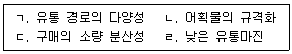
- ㄱ, ㄴ
- ㄱ, ㄷ
- ㄴ, ㄹ
- ㄷ, ㄹ
(정답률: 35%)
27. 수산물 물적 유통 활동에 해당되지 않는 것은?
- 금융
- 운송
- 정보전달
- 보관
(정답률: 24%)
28. 수산물 유통기구에 관한 설명으로 옳은 것은?
- 상품 유통의 원초적 형태는 생산자와 소비자의 간접적 거래로 이루어져 왔다.
- 유통단계가 단순하다.
- 유통기능은 세분화되며 고도화되고 있다.
- 수산물 매매는 가능하나 소유권 이전은 불가능하다.
(정답률: 37%)
29. 수산물 상적유통기구에서 간접적 유통기구에 해당되지 않는 것은?
- 수집기구
- 소비기구
- 수집 및 분산 연결기구
- 분산기구
(정답률: 35%)
30. 수산물 유통과정에서 취급 수산물의 소유권을 획득하여 제3자에게 이전시키는 활동을 하는 유통인은?
- 매매 차익 상인
- 수수료 도매업자
- 대리상
- 중개인
(정답률: 24%)
31. 수산물 산지시장의 기능이 아닌 것은?
- 거래형성 기능
- 양육 및 진열 기능
- 생산 기능
- 판매 및 대금결제 기능
(정답률: 39%)
32. 객주에 의하여 위탁 유통되는 수산물 판매 경로는?
- 생산자 →객주 → 도매시장 →도매상 → 소매상→ 소비자
- 생산자 →도매시장 → 객주 →도매상 → 소매상→ 소비자
- 생산자 →위판장 → 객주 →도매상 → 소매상→ 소비자
- 생산자 →도매시장 → 객주 →소매상 → 소비자
(정답률: 22%)
33. 활어의 산지 유통단계에 해당되지 않는 것은?
- 생산자
- 수집상
- 위판장
- 소매점
(정답률: 39%)
34. 꽃게 유통의 특징에 관한 설명으로 옳은 것은?
- 대부분 양식산이다.
- 주로 자망과 통발 어구로 어획한다.
- 어류에 비하여 특수한 유통설비가 많이 필요하다.
- 서해안에서 어획되며 연도별로 어획량의 변동은 없다.
(정답률: 34%)
35. 우리나라 굴(oyster)의 유통구조에 관한 설명으로 옳지 않은 것은?
- 자연산 굴은 통영 및 거제도를 중심으로 생산되며 수협을 통해 계통 출하된다.
- 양식산 생굴은 주로 산지 위판장을 통해 유통된다.
- 양식산 굴은 주로 박신 작업을 거쳐 판매된다.
- 가공용 굴은 주로 산지 위판장을 거치지 않고 직접 가공공장에 판매된다.
(정답률: 29%)
36. 선어의 유통구조 및 경로에 관한 설명으로 옳은 것은?
- 선도 유지를 위하여 냉동법을 이용한다.
- 원양 어획물의 유통경로이다.
- 대부분 수협을 통하지 않고 유통된다.
- 산지 유통과 소비지 유통으로 구분된다.
(정답률: 30%)
37. 냉동 수산물의 유통구조 및 특성에 관한 설명으로 옳지 않은 것은?
- 수협을 통하여 출하한다.
- 부패하기 쉬운 수산물의 보존성을 높인다.
- 선어에 비해 선도가 낮고 질감이 떨어진다.
- 유통을 위해 냉동 저장시설은 필수적이다.
(정답률: 32%)
38. 수산물 전자상거래에서 판매업체의 장점이 아닌 것은?
- 판촉비의 절감
- 시공간적 사업영역 확대
- 제품의 표준화
- 효율적인 마케팅 전략수립
(정답률: 35%)
39. 수산물 가격결정 방식에 관한 설명으로 옳은 것은?
- 한ㆍ일식 경매방식은 네덜란드 경매방식과 유사하다.
- 한ㆍ일식 경매방식은 동시호가식 경매이다.
- 네덜란드식 경매방식은 상향식 경매이다.
- 영국식 경매방식은 하향식 경매이다.
(정답률: 46%)
40. 수산물의 유통 효율화에 관한 설명으로 옳은 것은?
- 유통성과를 유지하면서 유통마진을 줄이면 유통효율은 감소한다.
- 유통성과를 줄이면서 유통마진을 늘리면 유통효율은 증가한다.
- 유통성과가 유통마진보다 크면 유통효율은 증가한다.
- 유통구조가 노동집약적이거나 복잡할수록 유통효율은 증가한다.
(정답률: 32%)
41. 유통업자 A는 마른 멸치 한 상자를 팔아 5,000원의 이익을 얻었다. 이 이익을 얻는데 상자당 보관비 1,000원, 운송비 1,000원, 포장비 1,000원이 소요되었다고 한다. 이때 유통마진은 얼마인가?
- 2,000원
- 5,000원
- 7,000원
- 8,000원
(정답률: 29%)
42. 활광어 가격이 10 % 하락하였는데 매출량은 5 % 증가했다. 이에 관한 설명으로 옳은 것은?
- 공급이 비탄력적이다.
- 수요가 비탄력적이다.
- 수요는 탄력적이나 공급이 비탄력적이다.
- 공급은 탄력적이나 수요가 비탄력적이다.
(정답률: 25%)
43. 산지단계에서 중도매인 유통 비용에 해당되는 것을 모두 고른 것은?
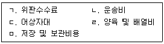
- ㄱ, ㄴ, ㄷ
- ㄱ, ㄴ, ㄹ
- ㄴ, ㄷ, ㅁ
- ㄷ, ㄹ, ㅁ
(정답률: 24%)
44. 수산물 마케팅 전략이 아닌 것은?
- 상품개발(product)
- 가격결정(price)
- 유통경로결정(place)
- 콜드체인(cold chain)
(정답률: 24%)
45. 수산물 이력 정보에 포함되지 않는 것은?
- 상품 정보
- 생산지 정보
- 소비자 정보
- 가공업체 정보
(정답률: 39%)
46. 음식점 A는 추어탕에 국내산과 중국산 미꾸라지를 섞어 판매하고 있다. 섞음 비율이 중국산보다 국내산이 높은 경우, 추어탕의 원산지 표시방법으로 옳은 것은?
- 추어탕(미꾸라지: 국내산과 중국산)
- 추어탕(미꾸라지: 국내산과 중국산을 섞음)
- 추어탕(미꾸라지: 중국산과 국내산)
- 추어탕(미꾸라지: 중국산과 국내산을 섞음)
(정답률: 15%)
47. 수산물 유통 관련 국제기구에 해당되지 않는 것은?
- WTO
- FAO
- WHO
- EEZ
(정답률: 24%)
48. 수산물 유통정책의 주요 목적이 아닌 것은?
- 수산물 가격의 적정화
- 수산물 유통의 효율화
- 수산물 가격의 안정화
- 안전한 수산물의 양식 생산
(정답률: 43%)
49. 소비지 유통정보에 해당되지 않는 것은?
- 농수산물유통공사의 가격정보
- 노량진수산시장의 가격정보
- 부산공동어시장의 가격정보
- 부산국제수산물도매시장의 가격정보
(정답률: 10%)
50. 수산물 가격 및 수급 안정정책 중 정부 주도형에 해당되는 것은?
- 비축제도
- 유통협약제도
- 자조금제도
- 관측사업제도
(정답률: 34%)
3과목: 수확후 품질관리론
51. 어패류의 근육 단백질 중에서 함유량이 가장 많은 것은?
- 액틴
- 미오신
- 미오겐
- 콜라겐
(정답률: 25%)
52. 어류의 신선도를 유지하기 위하여 연장해야 할 사후변화 단계는?
- 해경
- 숙성
- 사후경직
- 자가소화
(정답률: 35%)
53. 어패류에 함유되어 있는 색소가 아닌 것은?
- 티라민
- 멜라닌
- 구아닌
- 미오글로빈
(정답률: 20%)
54. 어패류의 선도가 떨어질 때 발생하는 냄새를 모두 고른 것은?
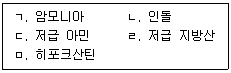
- ㄱ, ㄴ, ㄷ
- ㄱ, ㄹ, ㅁ
- ㄱ, ㄴ, ㄷ, ㄹ
- ㄴ, ㄷ, ㄹ, ㅁ
(정답률: 41%)
55. 새우를 빙장 또는 동결 저장할 때 새우 표면에 흑색 반점이 생기는 이유는?
- 효소에 의한 색소 형성
- 황화수소에 의한 육 색소 변색
- 껍질 색소의 공기 노출
- 키틴의 산화 변색
(정답률: 30%)
56. 수산 식품에 사용되는 대표적인 보존료는?
- 소르브산 칼륨
- 안식향산 나트륨
- 프로피온산 칼륨
- 디히드로초산 나트륨
(정답률: 25%)
57. 조기를 염장할 때 소금의 침투에 관한 설명으로 옳은 것은?
- 지방 함량이 많으면 소금의 침투가 빠르다.
- 염장 온도가 높을수록 소금의 침투가 빠르다.
- 칼슘염 및 마그네슘염이 많으면 소금의 침투가 빠르다.
- 일반적으로 염장 초기에는 물간법이 마른간법보다 소금의 침투가 빠르다.
(정답률: 34%)
58. 기체투과성이 낮고 열수축성과 밀착성이 좋아 수산 건제품 및 어육 연제품의 포장에 이용되는 플라스틱 필름은?
- 셀로판
- 폴리스티렌
- 폴리프로필렌
- 폴리염화비닐리덴
(정답률: 28%)
59. 마른 멸치를 포장할 때 탈산소제 봉입 포장의 효과가 아닌 것은?
- 갈변 방지
- 지방의 산화 방지
- 식품 성분의 손실 방지
- 혐기성 미생물의 생육 억제
(정답률: 35%)
60. 수산물을 건조할 때 감률 제1건조 단계에 관한 설명으로 옳지 않은 것은?
- 표면 경화 현상이 생기기 시작한다.
- 항률 건조 단계에 비해 건조 속도가 느리다.
- 한계 함수율에 도달하기 직전의 건조 단계이다.
- 내부의 수분 확산에 의해 건조 속도가 영향을 받는다.
(정답률: 20%)
61. 알긴산에 관한 설명으로 옳지 않은 것은?
- 고분자 산성다당류이다.
- 2가 금속 이온에 의해 겔을 만든다.
- 감태와 모자반 등이 원료로 사용된다.
- 아가로즈와 아가로펙틴으로 구성되어 있다.
(정답률: 25%)
62. 동남아시아에서 생산되는 동결 연육의 주원료로 탄력형성능은 좋으나 되풀림이 쉬운 어종은?
- 명태
- 대구
- 임연수어
- 실꼬리돔
(정답률: 30%)
63. 어묵의 주원료로 사용하는 동결 연육의 품질 판정 지표가 아닌 것은?
- 단백질 용해도
- Ca-ATPase 활성
- 휘발성염기질소 함량
- 연육 가열겔의 겔강도
(정답률: 29%)
64. 영하 50℃ 냉동고에서 저장 중인 참치의 TTT(Time-Temperature-Tolerance) 계산 결과 그 값이 80% 이었다. 이 냉동 참치의 품질에 관한 설명으로 옳은 것은?
- 식용이 가능하다.
- 품질 저하율이 20% 이다.
- 상품 가치를 잃어버린 상태이다.
- 실용 저장 기간이 80% 남아 있다.
(정답률: 30%)
65. 냉동 어패류의 프리저번 또는 갈변을 방지하기 위한 보호처리로 옳지 않은 것은?
- 블랜칭
- 급속동결
- 글레이징
- 방습포장
(정답률: 20%)
66. 통조림용 기기인 이중밀봉기에서 캔 뚜껑의 컬을 몸통의 플랜지 밑으로 말아 넣는 역할을 하는 부위는?
- 리프터
- 시이밍 척
- 시이밍 제1롤
- 시이밍 제2롤
(정답률: 24%)
67. 멸치 액젓의 품질 기준 항목이 아닌 것은?
- 수분
- 염도
- 총질소
- 유기산
(정답률: 31%)
68. 세균 A의 포자를 100℃ 에서 사멸시키는데 300분이 소요되었다. 살균 온도를 120℃ 로 올릴 경우 사멸에 필요한 예상 시간은? (단, 세균 A 포자의 Z값은 10℃ 이다.)
- 3분
- 6분
- 30분
- 60분
(정답률: 30%)
69. 황색포도상구균(Staphylococcus aureus) 식중독에 관한 설명으로 옳지 않은 것은?
- 고열이 지속되는 감염형 식중독이다.
- 장독소(enterotoxin)를 생성한다.
- 다른 세균성 식중독에 비해 잠복기가 짧은 편이다.
- 신체에 화농이 있으면 식품을 취급해서는 안된다.
(정답률: 90%)
70. HACCP 선행요건에서 위생표준 운영절차(SSOP)가 아닌 것은?
- 독성물질 관리 보관
- 위해 허용 한도 설정
- 위생약품 등의 혼입방지
- 식품 접촉 표면의 청결유지
(정답률: 31%)
71. HACCP 7원칙에 포함되는 내용을 모두 고른 것은?
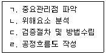
- ㄱ, ㄴ
- ㄱ, ㄹ
- ㄱ, ㄴ, ㄷ
- ㄴ, ㄷ, ㄹ
(정답률: 29%)
72. 노로바이러스 식중독에 관한 설명으로 옳지 않은 것은?
- 겨울철에 많이 발생하고 전염력이 강하다.
- GⅠ, GⅡ의 유전자형이 주로 식중독을 유발한다.
- DNA 유전체를 가진 독소형 식중독이다.
- 열에 약하므로 식품조리시 익혀 먹어야 한다.
(정답률: 73%)
73. 수산가공품의 품질검사 방법이 아닌 것은?
- 관능 검사
- 원산지 검사
- 영양성분 검사
- 위생안전성 검사
(정답률: 37%)
74. 식품위생법에서 수산물 중 허용 기준치가 설정되어 있지 않은 것은?
- 납
- 불소
- 메틸수은
- 카드뮴
(정답률: 95%)
75. 마비성 패류 독소의 (ㄱ)독성 성분과 (ㄴ)허용 기준치로 옳은 것은?
- ㄱ: Domoic acid, ㄴ: 0.2 mg/kg 이하
- ㄱ: Okadaic acid, ㄴ: 0.8 mg/kg 이하
- ㄱ: Venerupin, ㄴ: 0.2 mg/kg 이하
- ㄱ: Saxitoxin, ㄴ: 0.8 mg/kg 이하
(정답률: 30%)
4과목: 수산일반
76. 수산업의 산업적 특성으로 옳지 않은 것은?
- 생산의 확실성
- 생산물의 강부패성
- 노동 및 자본의 비유동성
- 수산자원 및 어장의 공유재산적 성격
(정답률: 96%)
77. 다음에서 설명하는 수산업 정보 시스템은?
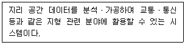
- USN
- SMS
- GIS
- RFID
(정답률: 30%)
78. 수산 자원 관리에서 가입관리에 해당되는 요소는?
- 시비
- 수초 제거
- 망목 제한
- 먹이 증강
(정답률: 24%)
79. 우리나라의 종자 배양장에서 인공 종자를 생산하여 방류하고 있는 품종을 모두 고른 것은?
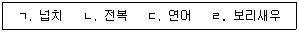
- ㄱ, ㄴ
- ㄱ, ㄷ
- ㄴ, ㄷ, ㄹ
- ㄱ, ㄴ, ㄷ, ㄹ
(정답률: 37%)
80. 수산 생물의 생태적 분류가 아닌 것은?
- 저서 생물
- 편형 생물
- 유영 생물
- 부유 생물
(정답률: 86%)
81. 다음에서 설명하는 계군 분석 방법은?
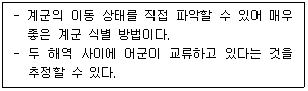
- 표지 방류법
- 생태학적 방법
- 형태학적 방법
- 어황의 분석에 의한 방법
(정답률: 96%)
82. 수산 자원량을 추정하는 방법 중 총량추정법이 아닌 것은?
- 어탐법
- 간접조사법
- 상대지수 표시법
- 잠재적 생산량 추정법
(정답률: 24%)
83. 어선 설비 중 항해 설비가 아닌 것은?
- 컴퍼스
- 양묘기
- 레이더
- 측심의
(정답률: 86%)
84. 끌그물 어법이 아닌 것은?
- 트롤
- 봉수망
- 기선저인망
- 기선권현망
(정답률: 91%)
85. 가장 먼 거리를 나타내는 도량형 단위는?
- 1 미터
- 1 야드
- 1 해리
- 1 마일
(정답률: 30%)
86. 유기물을 박테리아에 의해 산화시키는데 필요한 산소량을 측정하여 오염의 정도를 나타내는 수질오염 지표는?
- COD
- BOD
- DO
- SS
(정답률: 34%)
87. 다음에서 설명하는 양식 생물은?
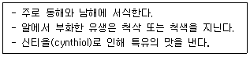
- 참굴
- 해삼
- 참전복
- 우렁쉥이
(정답률: 34%)
88. 양식 어류의 세균성 질병이 아닌 것은?
- 비브리오병
- 에드워드병
- 에로모나스병
- 림포시스티스병
(정답률: 78%)
89. 인공 종자 생산을 위한 먹이 생물이 아닌 것은?
- 로티퍼
- 아르테미아
- 케토세로스
- 렙토세파르스
(정답률: 90%)
90. 양식 대상종 중 새끼를 낳는 난태생인 것은?
- 넙치
- 참돔
- 조피볼락
- 참다랑어
(정답률: 91%)
91. 수온이 연중 20℃ 이상 유지되는 중남미의 태평양 연안이 원산지인 광염성 새우는?
- 대하
- 보리새우
- 징거미새우
- 흰다리새우
(정답률: 40%)
92. 양식 어류 중 육식성이 아닌 것은?
- 방어
- 초어
- 뱀장어
- 무지개송어
(정답률: 46%)
93. 해조류 양식 방법이 아닌 것은?
- 말목식
- 밧줄식
- 흘림발식
- 순환여과식
(정답률: 100%)
94. 수산양식에서 담수의 일반적인 염분 농도 기준은?
- 0.5 psu 이하
- 1.0 psu 이하
- 1.5 psu 이하
- 2.0 psu 이하
(정답률: 38%)
95. 서로 다른 2개의 해류가 접하고 있는 경계에서 주로 형성되는 어장은?
- 조경 어장
- 용승 어장
- 와류 어장
- 대륙붕 어장
(정답률: 34%)
96. 다음은 수산업법상 허가어업에 관한 설명이다. ( )에 들어갈 내용으로 옳은 것은?
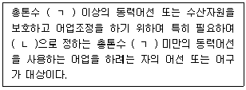
- ㄱ: 8톤, ㄴ: 대통령령
- ㄱ: 8톤, ㄴ: 해양수산부령
- ㄱ: 10톤, ㄴ: 대통령령
- ㄱ: 10톤, ㄴ: 해양수산부령
(정답률: 29%)
97. 다음에서 설명하는 어업은?
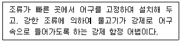
- 안강망 어업
- 근해선망 어업
- 기선권현망 어업
- 꽁치걸그물 어업
(정답률: 80%)
98. 수산 자원 관리와 관련된 용어와 명칭의 연결이 옳은 것은?
- MSY -최대순경제생산량
- MEY -최대지속적생산량
- OY -최대생산량
- ABC -생물학적허용어획량
(정답률: 23%)
99. 수산업법령상 신고어업인 것은?
- 잠수기 어업
- 나잠 어업
- 연안선망 어업
- 근해자망 어업
(정답률: 80%)
100. 국제해양법상 배타적 경제수역(EEZ)의 어족 관리를 위한 어족과 어종의 연결이 옳지 않은 것은?
- 정착성 - 조피볼락
- 강하성- 뱀장어
- 소하성 - 연어
- 고도 회유성 – 가다랑어
(정답률: 80%)